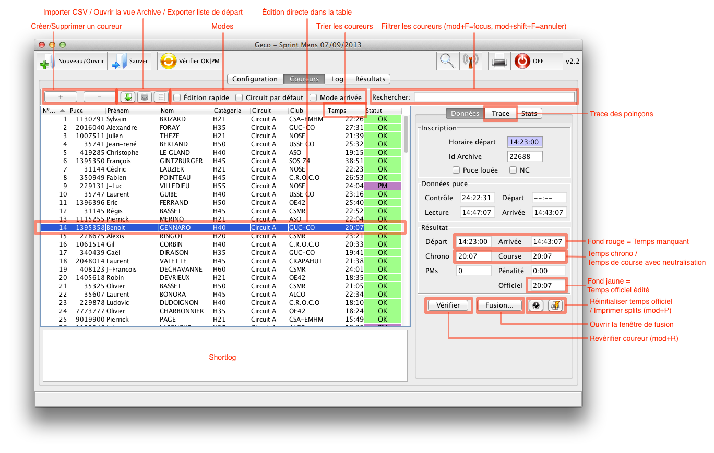
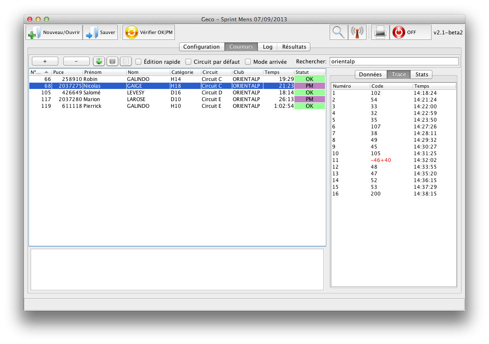

Onglet Coureurs
L’onglet coureurs est la place centrale pour inscrire les concurrents et gérer les événements durant la course.

(Cliquez pour zoomer)
La partie principale est la table des coureurs, qui permet de voir/éditer/filtrer/trier les concurrents tout en montrant les données essentielles.
La vue dans le panneau de droite peut montrer des données détaillées sur le coureur sélectionné (données puce, trace), ou bien des statistiques sur la course.
Table des coureurs
- Créer/Supprimer un coureur : ajouter un nouveau concurrent à la fin de la liste de départ ; supprimer le concurrent sélectionné
- Importer CSV / Ouvrir la vue Archive : pour faire des pré-inscriptions en masse
- Trier les concurrents : cliquez sur l’entête d’une colonne pour trier les concurrents par rang ascendant/descendant
- Filtrer les concurrents : entrez quelques caractères pour montrer les entrées correspondant à la recherche
- Édition rapide : un seul clic dans la table permet d’éditer les données - utile quand il s’agit d’effectuer rapidement plusieurs modifications manuelles
- Circuit par défaut : si coché, changer manuellement la catégorie d’un coureur change aussi son circuit pour le circuit par défaut de la catégorie (configuré dans l’étape)
- Mode arrivée : dans ce mode, Geco sélectionne automatiquement le dernier concurrent dont la puce est lue ; les coureurs sont classés par ordre de lecture des puces, en commençant par les plus récents (les tris par colonne sont désactivés dans ce mode)
Les différentes méthodes d’inscription des concurrents sont expliquées dans les workflows.
Édition manuelle des concurrents
- Double-cliquez sur une cellule pour l’éditer
- Geco vérifie la validité des valeurs entrées dans la table
- La barre de statut (et le log) montre informations et problèmes
- Utilisez le mode Circuit par défaut pour changer le circuit avec la catégorie
- Changer de circuit déclenche un calcul du statut pour vérifier la validité de la trace
- Si nécessaire, le temps officiel de course (pour les résultats) peut être changé manuellement
- Si nécessaire, le statut peut être changé manuellement
- Non parti (statut par défaut) : coureur inscrit mais sans donnée de course
- En course : coureur confirmé comme parti mais pas encore arrivé
- OK
- PM
- Absent
- Abandon
- Disq : disqualifié
- Hors délai
- Inconnu : puce lue inconnue
- Doublon : puce déjà lue
Shortlog
Le shortlog montre les six derniers événements enregistrés par le log. Il est spécialement utile durant la lecture des puces car il montre les informations essentielles : numéro de puce, statut, temps officiel, mais aussi problèmes détectés (trace des poinçons manquant, temps de départ ou d’arrivée manquant, puce inconnue…).
Dans le shortlog, les numéros de puce sont affichés comme hyperliens. Cliquer sur le lien sélectionne automatiquement l’entrée dans la table pour vérifier les données et résoudre les problèmes.

(Table avec un filtre sur ‘litto’ et affichant la trace détaillée)
Vue Données du coureur (mod+D)
La vue Données du coureur montre des informations complémentaires sur le coureur sélectionné. Cette vue est utile pour l’analyse des données de course lors de la résolution d’un problème.
- Inscription
- Horaire départ : si vous faites un départ avec horaires attribués à l’avance. Notez que vous pouvez mélanger horaire départ et boîtier départ : Geco donne priorité à l’heure de départ enregistrée dans la puce
- Puce louée : si cochée, Geco affiche un message lors de la lecture de la puce
- Données puce (champs d’information, non modifiables)
- Le champ Chrono montre toujours le temps Arrivée - Départ, sans prendre en compte des pénalités
- Les temps Départ/Arrivée sont affichées avec un fond rouge s’ils sont manquants
- Résultats (champs d’information, non modifiables)
- Le champ du temps officiel affiche toujours le chrono + pénalité
- Geco utilise le temps officiel de la table pour calculer les résultats (qui peut être changé à la main) - le champ est affiché avec un fond jaune pour indiquer un changement dans la table
- Boutons
- Vérifier (mod+R) recalcule le statut du coureur et le temps officiel
- Réinitialiser temps officiel recalcule le temps officiel
- Imprimer splits (mod+P) envoie les temps intermédiaires du coureur à l’imprimante
- Cliquez sur le bouton Fusion… pour une gestion avancée, comme la fusion de deux inscriptions ensemble. Ce bouton ouvre l’assistant de fusion sur le coureur sélectionné.
Vue Trace du coureur (mod+T)
La vue Trace montre la liste des postes du circuit comparée avec la liste des poinçons (code et temps) du coureur. Cette vue est très utile pour comprendre où un coureur a manqué un poste. Geco utilise un algorithme sophistiqué pour détecter les postes manquants, même dans le cas des papillons :
- un poste manquant est affiché en rouge avec le signe - devant
- un poste supplémentaire est affiché en bleu avec le signe + devant
- dans certains cas, le poste est affiché en rouge avec le format -X+Y : c’est l’indice d’une substitution, le coureur a pris le poste Y au lieu de X
- il est aussi facile de repérer les inversions avec la séquence -X, Y, +X : le coureur a pris Y avant de prendre X, alors qu’il aurait dû prendre l’ordre inverse.
Vue Statistiques (mod+S)
Voir la page Log pour une description des statistiques de course.
{kind=link}
{kind=link}